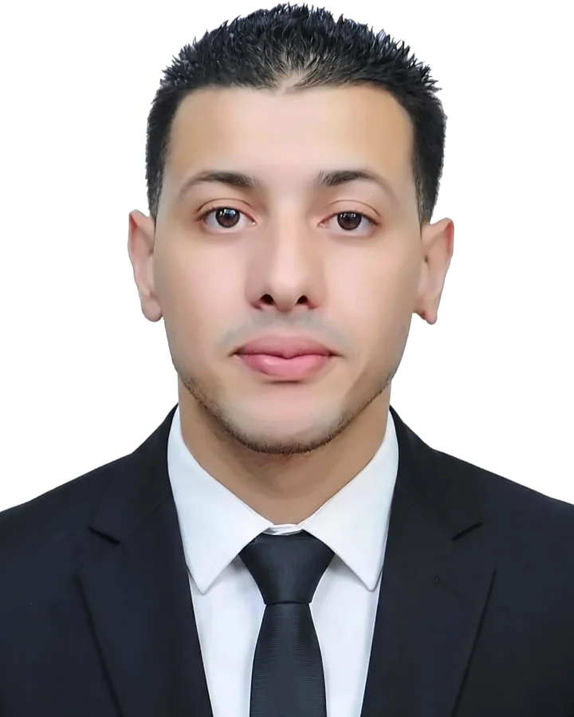

قبل يوم السبت 28 نوفمبر
جرّب صوتك في دقيقة
تدرّب على ما ستفعله داخل مكتب التصويت، حتى يُحسب صوتك لرياض عدوان.

- 1خذ ورقة القائمة رقم 1
- 2في المعزل: ضع علامة × أمام رياض عدوان رقم 03
- 3ضع الورقة في الظرف، والظرف في الصندوق
هذه تجربة للتدريب فقط، وليست تصويتاً حقيقياً. لا نحفظ أي معلومة عنك.
الخطوة 1 من 3
عند الدخول تأخذ ظرفاً وأوراق كل القوائم. اختر ورقة القائمة رقم 1
الخطوة 2 من 3 • داخل المعزل
ضع علامة × أمام رياض عدوان، الرقم 03
انتخاب أعضاء المجلس الشعبي البلدي • بلدية الرحباتحزب جبهة التحرير الوطنيالقائمة رقم 1
ورقة افتراضية للتدريبليست ورقة التصويت الرسمية
الخطوة 3 من 3
اخرج من المعزل، وضع الظرف في الصندوق
أحسنت! هكذا يُحسب صوتك لرياض عدوان
ورقة القائمة رقم 1، وعلامة × أمام الرقم 03. بعدها توقّع في قائمة الناخبين، وتضع أصبعك في الحبر.
متى؟يوم السبت 28 نوفمبر 2026
ماذا تأخذ؟بطاقة التعريف، وبطاقة الناخب إن كانت عندك
انتبه:الورقة دون علامة لا تُحسب لرياض